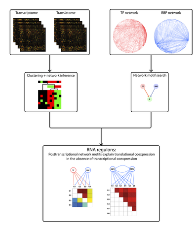

RNA regulon-omics
RNA regulon-omics is a portal for molecular biologists who wish to design detailed hypotheses from a large-scale, top-down analysis of posttranscriptional regulation in yeast (see this publication).
You can browse RNA regulon-omics in two ways:
- Gene based: Click on the link to obtain the list of genes that were assigned to translatome clusters. Use the search function of your web browser to find your gene of interest and click on its name to go to the cluster it belongs to.
- Cluster based: Click on the link to obtain the list of translatome clusters. Then click on a cluster of interest to go to its information page.
In the paper we refer to some transcriptome clusters as well. You can view these clusters here.
Contact Tom Michoel for further details.
